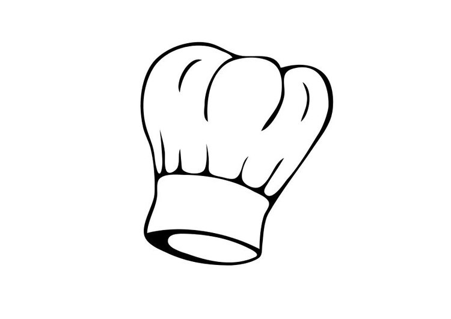

Kook informatie.
Ik zal u even wat algemene informatie over het gerecht vertellen.
Het is een hoofdgerecht.
je moet een oven of een stoomoven gebruiken.
Hoofdingrediënten zijn: zalm en groente.
Recept is voor 4 personen bedoeld.
Serveertempratuur: warm.
Hier ziet u een lijst van de bereidingswijze. Wat wel zo overzichtelijk voor u is.
- Verwarm de oven voor op 180 ◦C.
- Pel de sjalotten, halveer en snijd in halve ringen.
- Vet de ovenschaal in met olie en verdeel de zalmmoten, bestrooi met de gesneden sjalotten.
- Bak de zalm in circa 15 minuten gaar.
- Verhit de boter in een hapjespan en bak de voorgekookte krieltjes goudbruin en gaar.
- Maak de sperziebonen schoon.
- Breng een pan met water en zout aan de kook en kook de sperziebonen beetgaar.
- Serveer de zalm met de krieltjes en sperziebonen.
- Bestrooi de zalm met gedroogde tijm en een beetje zeezout.
